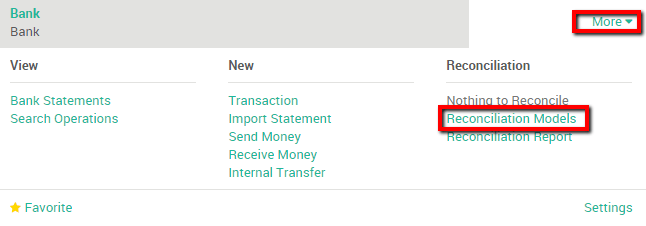
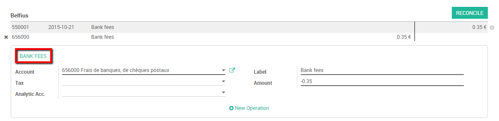

Overview
In Odoo you have the possibility to pre-fill some accounting entries in order to easily reconcile recurrent entries such as bank fees.
We will take the following example to illustrate the concept : Every month my company receives a bank fee cost, which depends of our bank account current balance. This fee is thus variable.
Create Reconciliation Models
First, we need to configure two model reconciliation entries. To do so, go to the accounting application dashboard. On your bank journal, click on .
We want to be able to book our bank fees easily. Our bank deducts fees depending on our balance, meaning that it can vary every month.
We create a button Label called Bank fees, select the correct account to book those fees. Moreover we also need to specify that the amount type is "Percentage of balance" with an Amount of 100%. This parameter will tell Odoo to take the entire fee into account.

Save your changes when you are done.
Note
If the amount of your bank fee is fixed, you can as well select Fixed under amount type and specify the amount in the amount tap.
See also
You can also use this functionality to handle discounts. Please refer to How to setup cash discounts?
Register your payments based on a reconciliation model
Register your payment by importing your bank statements that will be impacted by the payment of the bank fee.
When doing the reconciliation, you can select an open balance and click the Reconciliation Model button (in this case, Bank Fees) to get all the relevant data instantly.
Finally, click on Reconcile to finish the process.